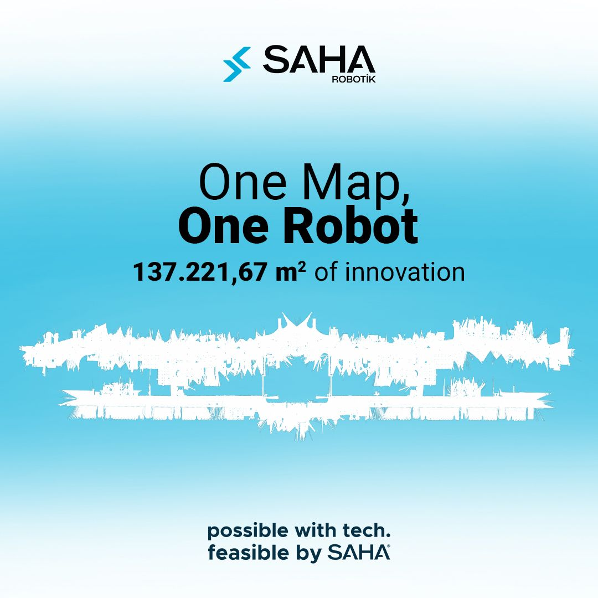

Saha Robotik
Robotics Engineer · Localization Lead
October 2023 - Present
Work at Saha Robotik
Saha Robotik is a technology company developing autonomous waiter, cargo, and guide robots. I built much of the core localization and mapping architecture, along with the dynamic and static obstacle-detection algorithm, behind robots that operate continuously in commercial environments. Since relocating to Denmark I have been working remotely: I still lead the 2D/3D localization work, now in a more supervisory role as the stack has matured, while focusing mainly on building the company's next robot-learning stack around OpenArm and vision-language-action policies.
- Designed and built much of the core localization and mapping architecture and algorithms used across the production robots.
- Helped develop the robot-control stack now used by more than 400 robots operating 24/7; further implementation details are confidential.
- Developed 2D LiDAR obstacle detection for dynamic and static objects, including trajectory estimation.
- Led the Istanbul Airport guide-robot project end to end: planning, mapping, localization, field testing, and deployment.
- Still lead the 2D/3D localization work, now in a more supervisory role as the stack has matured.
- Currently focused on OpenArm-based mobile manipulation, robot data collection, and VLA policies, building the company's robot-learning infrastructure.
- Work with ROS 2, C++, and Python across the production robot software.
Istanbul Airport
To the best of my knowledge, the 137,221 m² map used for Saha Robotik's Istanbul Airport project is the largest publicly shared indoor map used for an autonomous service-robot deployment. After a passenger scans a boarding pass, the robot identifies the destination gate and autonomously guides the passenger there.
The project had been planned since 2019. After I joined Saha Robotik in October 2023, I took responsibility for bringing it into operation in 2024. Over a four-month period, I planned the rollout, created and validated the 137,221 m² airport map, prepared the localization system, organized the full field-test sequence, integrated the deployment workflow, and commissioned the first robot. The deployed robot operates 24/7 and travels at least 25 km per day.
After the first deployment, I contributed to commissioning more than five additional robots through the continuing airport agreements. I still lead the technical side of this project alongside my other responsibilities at Saha Robotik.
Public Mapping Post• Airport Deployment Post

Azerbaijan ROS Training Program
From February to April 2025, I led Saha Robotik's ROS training program for university students in Azerbaijan. I first taught the group remotely for one month, then traveled to Azerbaijan for the in-person phase. During the visit I delivered practical ROS sessions, attended the students' final presentations, and evaluated the projects they had developed from the training.
Live Deployment Videos
More Istanbul Airport clips on YouTube: real-life operation• autonomous guide robot